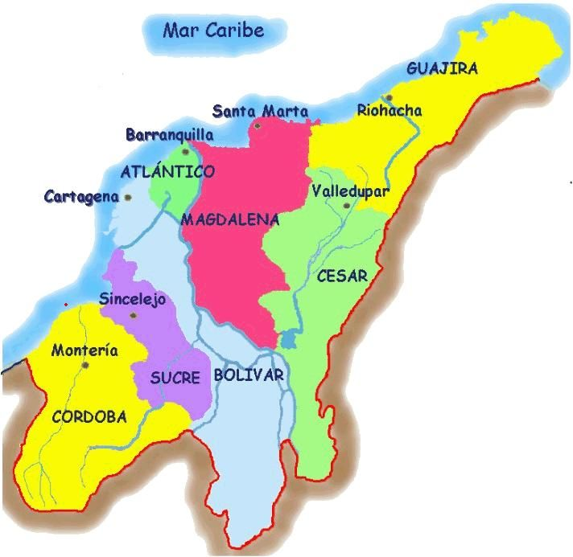
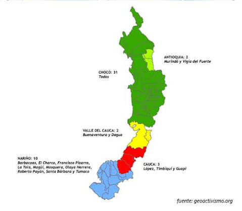
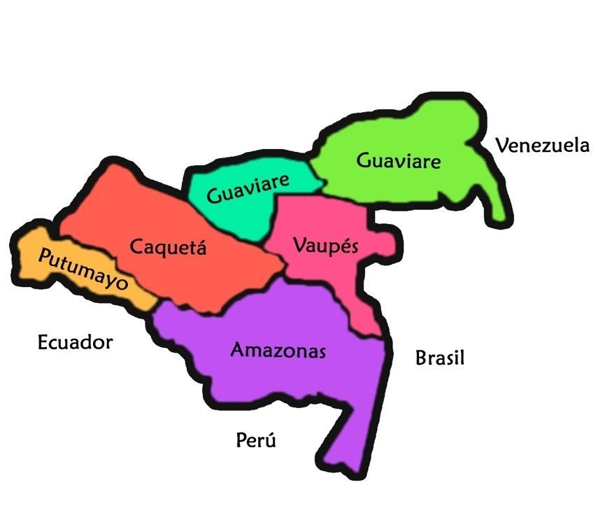
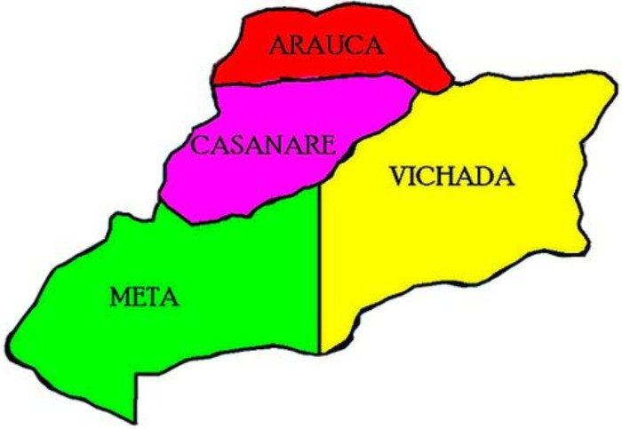
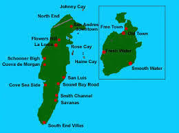

Seis regiones, seis maneras de contar Colombia a través de sus postres.

Siete departamentos bañados por el mar Caribe, entre playas, ciénagas y sabanas. Aquí el coco, el ñame, el tamarindo y la panela se convierten en dulces de calle y de plaza.
El corazón montañoso del país, atravesado por las tres cordilleras. Tierra de café, caña panelera y tradición lechera: de aquí salen arequipes, brevas, bocadillos y cuajadas.

Selva húmeda, ríos y costa sobre el océano Pacífico. Su dulcería mezcla herencia afro e indígena con frutas como el borojó, el chontaduro y el coco.

La gran selva del sur del país. Sus frutos, como el copoazú, el arazá, el camu camu y la cocona, dan dulces ácidos, aromáticos y llenos de identidad indígena.

Los Llanos Orientales: sabanas inmensas, ríos y vida ganadera. La leche, la panela y frutas como el moriche y el merey protagonizan sus dulces de campo.

El archipiélago de San Andrés, Providencia y Santa Catalina, en pleno mar Caribe. La cultura raizal se siente en sus dulces de coco y en recetas con nombre en inglés criollo.
Lluvia de dulces